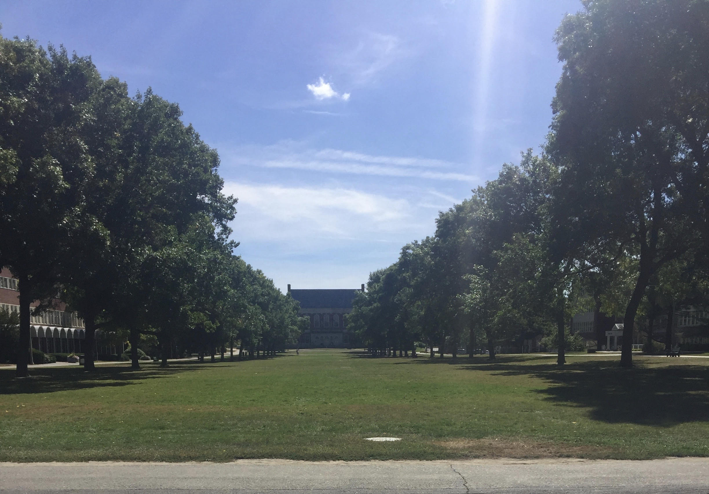

Links to:[Home][My blog][Umaine][Photo Gallary][Hobbies]
|  |
I am a Food Management major at the University of Maine. I recently changed my major from business because I am passionate about food. I would like to someday open a catering company and cater tailgates. I am a huge sports fan so being in that environment ans still doing what I want would be awesome. I chose UMaine mostly because of the in-state tuition they started offering for Massachusetts students. Another reason is because there were a couple other school but I knew too many people going there and I wanted a place where I would meet a lot of new people.